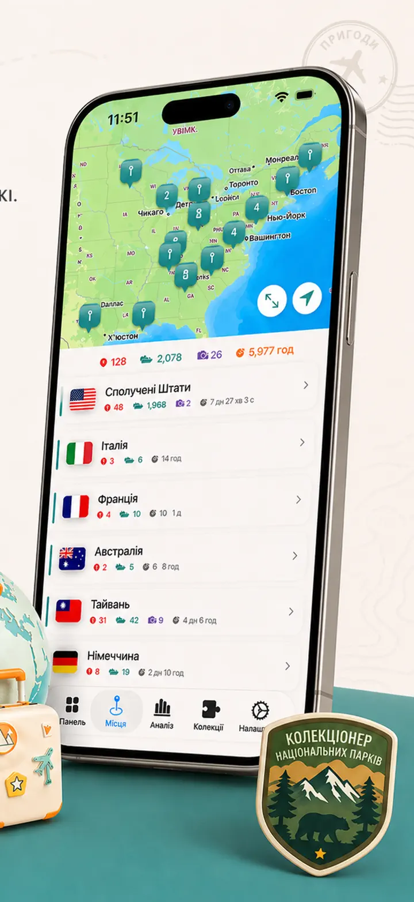
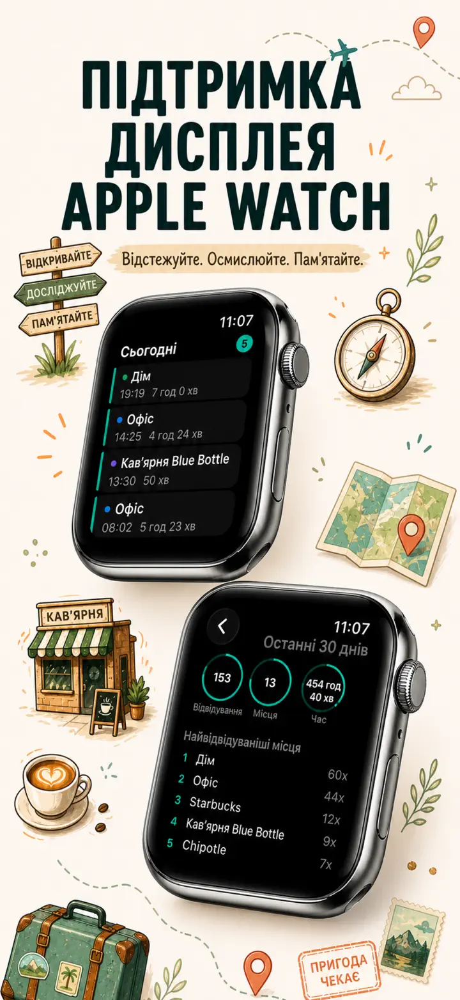
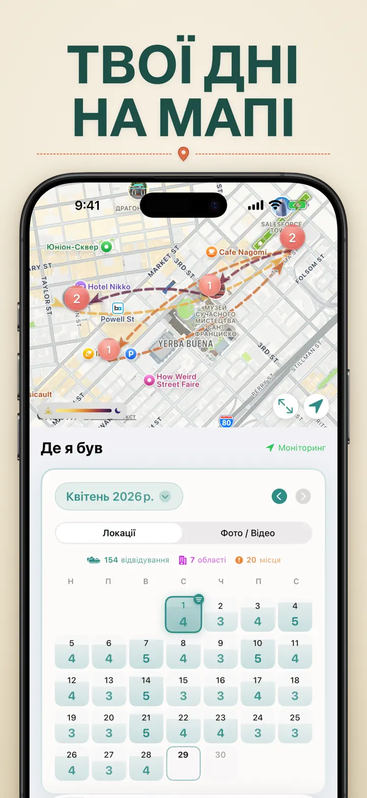
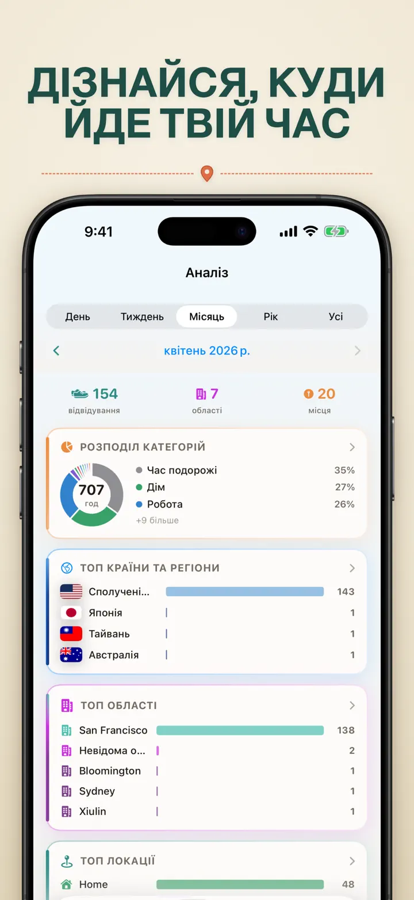
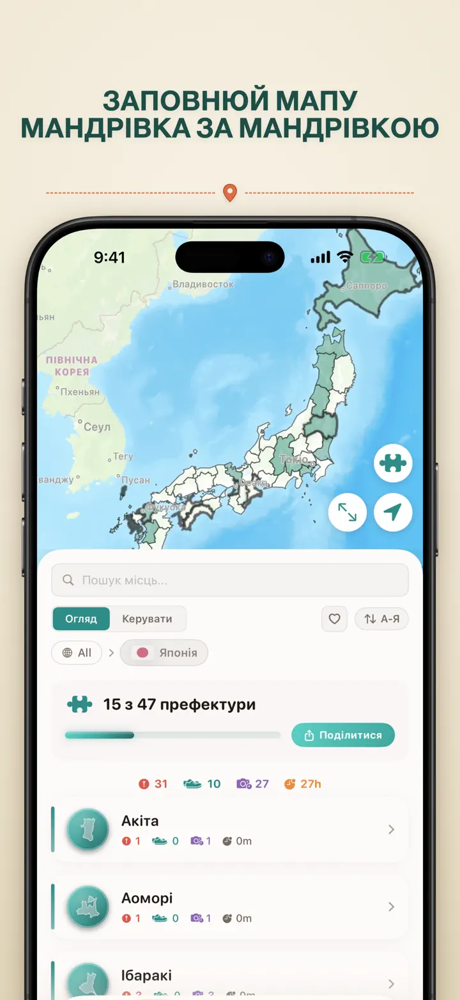
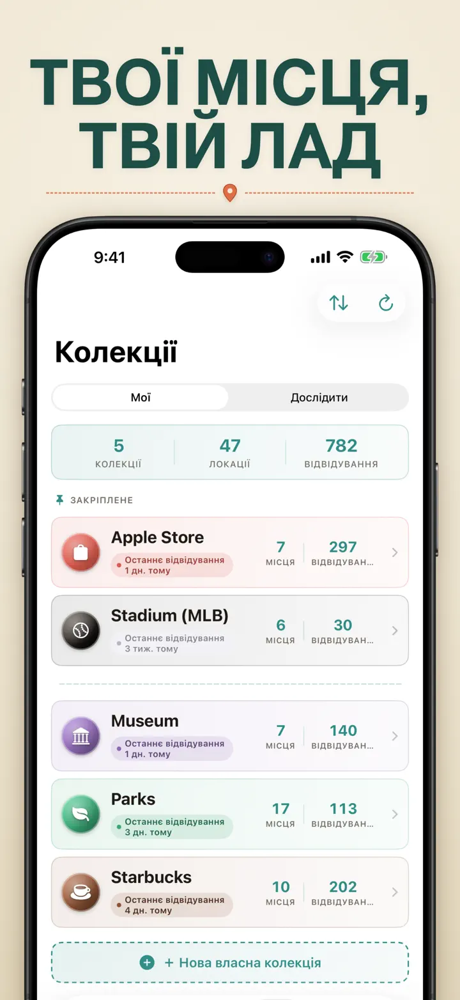
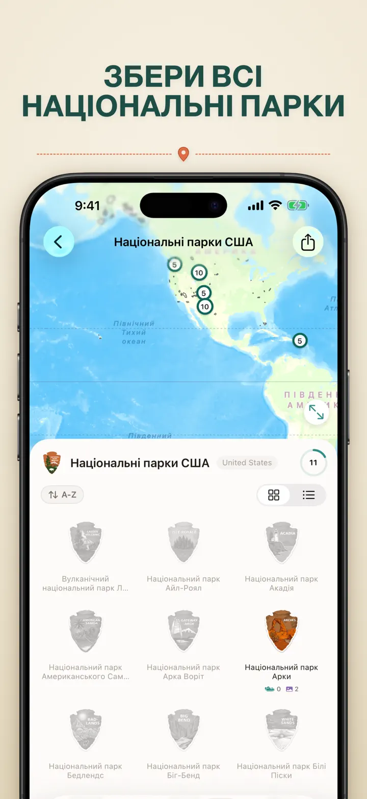
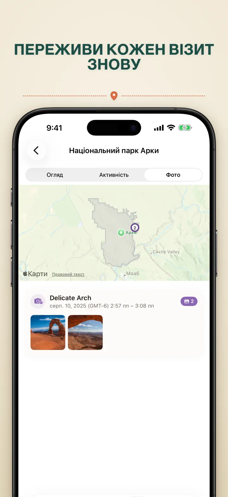

Де я був
Автощоденник місць і подорожей
Нове: 103 святилища Ітіномія Японії, у кожного власний різьблений значок. Автоматичний облік візитів і приватна хронологія — усе на вашому пристрої.
Завантажити з App StoreПро застосунок
Where was I ? — ваша персональна памʼять місць
Намагалися згадати ресторан минулого місяця? Чи цікаво, скільки часу ви проводите в офісі та вдома? Where was I ? автоматично фіксує відвідування й створює гарну хронологію вашого життя.
АВТОМАТИЧНЕ ВІДСТЕЖЕННЯ
Жодного ручного запису. Застосунок тихо фіксує прибуття та вихід, формуючи детальну історію відвідувань без зусиль із вашого боку.
РОЗУМНИЙ КАЛЕНДАР
Дивіться відвідування за днем, тижнем чи місяцем. Інтуїтивний календар одразу показує кількість візитів і місць. Торкніться дня, щоб побачити, де ви були.
ВІДЖЕТИ ГОЛОВНОГО Й ЗАБЛОКОВАНОГО ЕКРАНІВ
Останні візити — одним поглядом завдяки середньому віджету головного екрана. Віджети заблокованого екрана показують поточне місце, таймер перебування або кількість візитів за сьогодні — усі відкривають застосунок дотиком.
ОРГАНІЗОВАНІ МІСЦЯ
Місця автоматично групуються за регіоном і містом. Призначайте категорії: Дім, Робота, Спортзал, Кафе. Створюйте свої категорії з іконками та кольорами.
ПОТУЖНА АНАЛІТИКА
Відкривайте закономірності свого життя:
- Розподіл часу за категоріями
- Найчастіше відвідувані місця
- Аналіз тижневого ритму
- Тренди частоти візитів
- Графік тривалості візитів для кожного місця — за день, тиждень, місяць чи рік
КОЛЕКЦІЯ КРАЇН І РЕГІОНІВ
Перетворіть подорожі на пазл! Дізнайтеся, скільки регіонів ви відвідали в кожній країні. Діліться прогресом у вигляді пазлу.
ПРОГРЕС У НАЦІОНАЛЬНИХ ПАРКАХ
Досліджуйте природу! Автоматично фіксуйте візити до нацпарків і стежте за прогресом поряд зі щоденними локаціями.
100 ЗНАМЕНИТИХ ЗАМКІВ ЯПОНІЇ
Подорожуєте Японією? Нова вбудована колекція відстежує ваші візити до 100 знаменитих замків країни. Відкрийте «Колекції» → «Огляд» → «Японія».
ВЛАСНІ КОЛЕКЦІЇ
Збирайте все — Apple Stores, музеї, броварні. Створіть колекцію, задайте ключові слова — і вона поповнюється сама. Додавайте чи прибирайте місця вручну. Для кожної — кількість, історія й мапа.
ІМПОРТ ІСТОРІЇ ПЕРЕМІЩЕНЬ
Переходите з іншого застосунку? Перенесіть усю свою історію — формат визначається автоматично, великі експорти обробляються, а перед імпортом ви побачите попередній перегляд:
- Google Timeline (експорт Google Maps або Google Takeout)
- Arc Timeline (щомісячні файли .json, які ви експортуєте з Arc)
- Moves (резервна копія ProtoGeo / Facebook Moves)
ГРУПОВЕ КЕРУВАННЯ
Керуйте всіма локаціями в одному місці. Шукайте, сортуйте, фільтруйте. Виділяйте кілька місць, щоб категоризувати чи видалити їх. Тримайте бібліотеку в порядку.
ПРИВАТНІСТЬ ПОНАД УСЕ
Дані про місцезнаходження залишаються на пристрої. Жодних акаунтів. Нічого не надсилається на сервери. Ваші переміщення — лише ваша справа.
ІДЕАЛЬНО ПІДХОДИТЬ ДЛЯ:
- Обліку робочих годин і локацій
- Запамʼятовування ресторанів і магазинів
- Аналізу щоденного розпорядку
- Подорожнього щоденника й візитів у нацпарки
- Звітів про витрати та облік пробігу
МОЖЛИВОСТІ:
- Автоматичне виявлення прибуття та виходу
- Календар із денною стрічкою візитів
- Віджети головного й заблокованого екранів із переходом у застосунок
- Групування локацій за регіоном і містом
- Власні категорії з іконками та кольорами
- Розумні підказки категорій з Apple Maps
- Детальна історія відвідувань із тривалістю
- Графік тривалості візитів для місць (день / тиждень / місяць / рік)
- Аналітична панель із інсайтами
- Пошук і фільтр локацій
- Колекція країн із пазлом для поширення
- Облік прогресу в національних парках
- Вбудована колекція «100 знаменитих замків Японії»
- Власні колекції з автозбіганням за ключовими словами, ручним редагуванням і статистикою
- Групове керування локаціями
- Імпорт із Google Timeline, Arc Timeline і Moves
- Можливості експорту
- Без реєстрації акаунту
- Дизайн із фокусом на приватність
Починайте будувати памʼять місць уже сьогодні. Завантажте Where was I ? — і ніколи не забувайте, де ви бували.
Privacy Policy: https://masawata.net/privacy-policy.html Terms Of Service: https://www.apple.com/legal/internet-services/itunes/dev/stdeula/
Знімки екрана








Де я був
Нове: 103 святилища Ітіномія Японії, у кожного власний різьблений значок. Автоматичний облік візитів і приватна хронологія — усе на вашому пристрої.
Завантажити з App Store